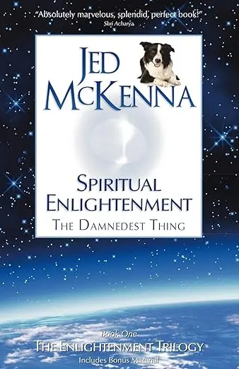

- Jed McKenna
- Excerpt from Jed McKenna’s AMAZING (!!!) book Spiritual Enlightenment, the Damnedest Thing
- I love the book covers. When I was first recommended Jed, I was so baffled by the website, now I love it, lol

“I had an experience in meditation I wanted to share with you,” Marla begins, and proceeds to reel off a string of insights that she feels aid her in becoming free of something or other, or maybe she’s overcome an obstacle or slain a dragon or something.
I know within the first few words that she’s trying to impress me so that I will reward her with praise. It’s a common enough dynamic. She assumes we have an unspoken agreement in which her part is to reflect and reinforce my self-image as a Great Spiritual Teacher so that I, in turn, will reflect and reinforce her self-image as a Very Spiritual Person. She assumes we have this unspoken agreement because she had it with the dozen or so other spiritual teachers and it’s always worked out well; a nice win-win situation.
I interrupt. “Have you heard the term makyo?” I ask her.
“Yes, isn’t it like something to do with…?”
“It’s a Zen thing. Very handy term. In Zen, no one is interested in spiritual growth. No one is interested in self-exploration or self-realization. They’re not trying to become better people or happier people. They’re not following a spiritual path, they’re following a wake-the-hell-up path. They’re completely focused on the hot and narrow pursuit of enlightenment. There’s no consolation prize, no secondary objective. Full awakening is what they signed up for. Of course, as students, they have no real idea of what such a pursuit actually entails, so it’s the job of the master to see that they stay on course. With me so far?”
She nods a little uncertainly.
“The Tao warns us to beware the flowery trappings of the path, or words to that effect. There are many things to see and do on the path to awakening. It’s all new and magical. There are points, for instance, where you can stop and develop what you might consider special powers; prophecy, telepathy, mediumship, magical arts, plate spinning, whatever.
During Zen meditation—zazen—the student might merge into timeless unity consciousness. He might unravel all the complexities of his life in a single glorious sitting. He might feel that he has vomited a gigantic ball of molten lead that has resided in his chest for years. He might descend into the pits of hell and slay all his demons. ==After such experiences, he might run to his master to share his victories and experiences, thinking he’s well on the road to enlightenment, only to have the master splash him with cold water by calling it makyo.==”
Marla is frowning now, realizing that she’s the one being splashed with cold water.
“When a Zen master uses the term makyo, he’s telling his students that the precious gems they’re stopping to pick up or the pretty flowers they’re pausing to collect only have value or beauty in the world they’ve chosen to leave behind. The Tao says ‘beware the flowery trappings’ because, in order to possess them or benefit from them, you must cease your journey, stay in the dream. Ultimately, they’re just a distraction from the tricky business of waking up. Breaking free of delusion takes everything you have. The price of truth is everything. Everything. That’s the rule and it’s inviolable.”
She looks sad. I continue in a gentler tone.
“I’m explaining makyo because this is what’s happening here. You have had some profound insights in meditation and you have brought them to me. Understandably so. Western spirituality seems to equate enlightenment with self-perfection, so it’s natural to assume that ridding yourself of mental and emotional baggage is the way to go. ==But what I’m telling you is that, within the context of searching for enlightenment, your experiences are makyo. You bring me these priceless jewels and I am telling you that you should flush them down the toilet and move on==.”
I pause to let that sink in. The point here is less to aid Marla in her quest for enlightenment than to help her see that she’s not on one. I sometimes wonder if I would make a good Zen master—Roshi—but I don’t think so. Or maybe I’d be a great one, depends how you look at it.
My emblem would be a graphic depiction of the Buddha’s head lanced on a pike, complete with dripping blood and dangling viscera. The motto beneath the emblem would be “DIE!” Students would line up outside my door after zazen to come in and tell me their experiences and as soon as the first one opened his mouth I’d start shrieking at the top of my lungs:
“You’re not him! You’re not the real guy! You’re the makyo guy! You’re just the dream character!” I’d probably start hitting the student with a stick at this point, which is one of the perks of being a Zen master. “You’re supposed to be dead! Why aren’t you dead? Why are you coming to see me? You’re the problem! Get out and come back when you’re dead. That’s the guy I want to talk to, not a stupid dream character. Now GET OUT!”
That essentially defines the quest for enlightenment; the “you” that you think of as you (and that thinks of you as you, and so on) is not you, it’s just the character that the underlying truth of you is dreaming into brief existence. Enlightenment isn’t in the character, it’s in the underlying truth.
Now, there’s nothing wrong with being a dream character, of course, unless it’s your goal to wake up, in which case the dream character must be ruthlessly annihilated. If your desire is to experience transcendental bliss or supreme love or altered states of consciousness or awakened kundalini, or to qualify for heaven, or to liberate all sentient beings, or simply to become the best dang person you can be, then rejoice! You’re in the right place: the dream state, the dualistic universe. However, if your interest is to cut the crap and figure out what’s true, then you’re in the wrong place and you’ve got a very messy fight ahead and there’s no point in pretending otherwise.